wmtask_pobs16_cayley_top3nd_lcobs_20260501T163325Z__stage_bProject: WMTask_identity_encoder_verification
Launched: 2026-05-01T22:25:18Z
Completed: 2026-05-02T02:30:29Z
Outcome: complete_clean
Git: latent-JacobianODE @ db13c30
Expected runs: 32
wmtask_direct_sum_additive_p20_perareapcaautodim_cayley_partialobs16_splitmode_top3nd_nearid_tf__lc_x_obsnoisescale_sweepDescription
WMTask partial-obs (16 random per area, partial_obs_seed=42) full grid sweep: 3 n_delays (top-3 from sweep 1) × 7 LC × 3 obs_noise_scale = 63 cells, with two-stage Stage A → Stage B culling. Same encoder recipe as the full-obs Cayley pca_999 winner (DirectSum + per-area PCA-99 autodim + Cayley orthogonal mixers + near-identity init + TF-coupled LR + split-mode losses), with prediction_steps=20 and seq_length=35 so n_delays up to 15 fits the 49-frame delay2 window.
Hypothesis
With the top-3 n_delays already identified, this grid is the partial-obs analogue of the full-obs Cayley LC × obs_noise sweep that identified pjiw0cab (LC=1e-4, obs=0, traj=0.0042). Expectation: best partial-obs cell within ~3x of pjiw0cab if the recipe ports cleanly. If best is much worse, the partial-obs sufficient-statistic hypothesis (memory: project_partial_obs_sufficient_statistic.md) needs revisiting at this n_observed level.
Success criteria
Swept axes (10): data.postprocessing.generalized_variance, data.train_test_params.delay_embedding_params.n_delays, model.n_target_dims, model.n_target_dims_per_block_pca_auto, model.n_target_dims_per_block_pca_cum_var, model.params.input_dim, model.params.output_dim, training.ckpt_path, training.lightning.loop_closure_weight, training.lightning.obs_noise_scale
Chosen run (by best_traj_loss): 4a41gs3b — traj_loss=0.00337, MASE=0.5958, R²=0.9959, LC loss=40.940, epoch=40.0
Swept-axis values at chosen run: data.postprocessing.generalized_variance=0.0197462 · data.train_test_params.delay_embedding_params.n_delays=12 · model.n_target_dims=33 · model.n_target_dims_per_block_pca_auto=[19, 14] · model.n_target_dims_per_block_pca_cum_var=[0.990466904603792, 0.9907145482737882] · model.params.input_dim=33 · model.params.output_dim=1089 · training.ckpt_path=/orcd/data/ekmiller/001/eisenaj/JacobianODE/sweeps/two_stage_ckpts/wmtask_pobs16_cayley_top3nd_lcobs_20260501T163325Z__stage_a/7ec67a42d1c5dfae/last.ckpt · training.lightning.loop_closure_weight=1.0e-06 · training.lightning.obs_noise_scale=0
Runs analyzed: 32 (expected 32)
| run_idx | run_id | data.postprocessing.generalized_variance |
data.train_test_params.delay_embedding_params.n_delays |
model.n_target_dims |
model.n_target_dims_per_block_pca_auto |
model.n_target_dims_per_block_pca_cum_var |
model.params.input_dim |
model.params.output_dim |
training.ckpt_path |
training.lightning.loop_closure_weight |
training.lightning.obs_noise_scale |
best_traj_loss | best_MASE | R² | LC loss | epoch |
|---|---|---|---|---|---|---|---|---|---|---|---|---|---|---|---|---|
| 4 | 4a41gs3b |
0.0197462 | 12 | 33 | [19, 14] | [0.990466904603792, 0.9907145482737882] | 33 | 1089 | /orcd/data/ekmiller/001/eisenaj/JacobianODE/sweeps/two_stage_ckpts/wmtask_pobs16_cayley_top3nd_lcobs_20260501T163325Z__stage_a/7ec67a42d1c5dfae/last.ckpt | 1.0e-06 | 0 | 0.00337 | 0.5958 | 0.9959 | 40.940 | 40.0 |
| 5 | bya5fspy |
0.0197462 | 6 | 25 | [14, 11] | [0.9903351849713868, 0.9900285479042218] | 25 | 625 | /orcd/data/ekmiller/001/eisenaj/JacobianODE/sweeps/two_stage_ckpts/wmtask_pobs16_cayley_top3nd_lcobs_20260501T163325Z__stage_a/e04d172d7c19542d/last.ckpt | 1.0e-05 | 0 | 0.00337 | 0.5926 | 0.9959 | 11.108 | 43.0 |
| 3 | fpj534gw |
0.0197462 | 9 | 30 | [17, 13] | [0.9905957045468444, 0.9910578856637212] | 30 | 900 | /orcd/data/ekmiller/001/eisenaj/JacobianODE/sweeps/two_stage_ckpts/wmtask_pobs16_cayley_top3nd_lcobs_20260501T163325Z__stage_a/5cea1ce00769376b/last.ckpt | 1.0e-06 | 0 | 0.00338 | 0.5913 | 0.9960 | 39.861 | 38.0 |
| 7 | thzq0fk3 |
0.0197462 | 12 | 33 | [19, 14] | [0.990466904603792, 0.9907145482737882] | 33 | 1089 | /orcd/data/ekmiller/001/eisenaj/JacobianODE/sweeps/two_stage_ckpts/wmtask_pobs16_cayley_top3nd_lcobs_20260501T163325Z__stage_a/f79da651d0874c6e/last.ckpt | 0 | 0 | 0.00338 | 0.5964 | 0.9959 | 101.784 | 40.0 |
| 2 | es7u8bok |
0.0197462 | 9 | 30 | [17, 13] | [0.9905957045468444, 0.9910578856637212] | 30 | 900 | /orcd/data/ekmiller/001/eisenaj/JacobianODE/sweeps/two_stage_ckpts/wmtask_pobs16_cayley_top3nd_lcobs_20260501T163325Z__stage_a/250ba3e607efe585/last.ckpt | 0 | 0 | 0.00338 | 0.5915 | 0.9960 | 97.237 | 38.0 |
| 8 | c3uk2npp |
0.0197462 | 12 | 33 | [19, 14] | [0.990466904603792, 0.9907145482737882] | 33 | 1089 | /orcd/data/ekmiller/001/eisenaj/JacobianODE/sweeps/two_stage_ckpts/wmtask_pobs16_cayley_top3nd_lcobs_20260501T163325Z__stage_a/0911511d700e9cd7/last.ckpt | 1.0e-05 | 0 | 0.00339 | 0.5974 | 0.9958 | 11.131 | 40.0 |
| 6 | wu8b6svd |
0.0197462 | 9 | 30 | [17, 13] | [0.9905957045468436, 0.99105788566372] | 30 | 900 | /orcd/data/ekmiller/001/eisenaj/JacobianODE/sweeps/two_stage_ckpts/wmtask_pobs16_cayley_top3nd_lcobs_20260501T163325Z__stage_a/2bcdc935dc22d3a8/last.ckpt | 1.0e-05 | 0 | 0.00339 | 0.5926 | 0.9959 | 10.827 | 37.0 |
| 1 | hiiwuy1d |
0.0197462 | 6 | 25 | [14, 11] | [0.9903351849713868, 0.9900285479042212] | 25 | 625 | /orcd/data/ekmiller/001/eisenaj/JacobianODE/sweeps/two_stage_ckpts/wmtask_pobs16_cayley_top3nd_lcobs_20260501T163325Z__stage_a/4bdadbe914dfd0cb/last.ckpt | 1.0e-06 | 0 | 0.00342 | 0.5962 | 0.9959 | 37.053 | 36.0 |
| 0 | a8pp6sqt |
0.0197462 | 6 | 25 | [14, 11] | [0.9903351849713868, 0.9900285479042212] | 25 | 625 | /orcd/data/ekmiller/001/eisenaj/JacobianODE/sweeps/two_stage_ckpts/wmtask_pobs16_cayley_top3nd_lcobs_20260501T163325Z__stage_a/ea5b8ea7676f1e4e/last.ckpt | 0 | 0 | 0.00342 | 0.5964 | 0.9959 | 91.541 | 36.0 |
| 15 | gagriild |
0.0197462 | 6 | 25 | [14, 11] | [0.9903351849713868, 0.9900285479042218] | 25 | 625 | /orcd/data/ekmiller/001/eisenaj/JacobianODE/sweeps/two_stage_ckpts/wmtask_pobs16_cayley_top3nd_lcobs_20260501T163325Z__stage_a/0e5af2045a0589ab/last.ckpt | 1.0e-04 | 0 | 0.00351 | 0.6033 | 0.9958 | 2.121 | 43.0 |
| 13 | geqp9qaf |
0.0197462 | 6 | 25 | [14, 11] | [0.9903351849713868, 0.9900285479042218] | 25 | 625 | /orcd/data/ekmiller/001/eisenaj/JacobianODE/sweeps/two_stage_ckpts/wmtask_pobs16_cayley_top3nd_lcobs_20260501T163325Z__stage_a/95d7b552fb866dc3/last.ckpt | 0 | 0.01 | 0.00352 | 0.6047 | 0.9957 | 112.804 | 43.0 |
| 16 | ebdr4x97 |
0.0197462 | 6 | 25 | [14, 11] | [0.9903351849713868, 0.9900285479042218] | 25 | 625 | /orcd/data/ekmiller/001/eisenaj/JacobianODE/sweeps/two_stage_ckpts/wmtask_pobs16_cayley_top3nd_lcobs_20260501T163325Z__stage_a/3860ebb0ca4ed993/last.ckpt | 1.0e-06 | 0.01 | 0.00352 | 0.6051 | 0.9957 | 55.339 | 43.0 |
| 20 | 8cupshuw |
0.0197462 | 9 | 30 | [17, 13] | [0.9905957045468436, 0.99105788566372] | 30 | 900 | /orcd/data/ekmiller/001/eisenaj/JacobianODE/sweeps/two_stage_ckpts/wmtask_pobs16_cayley_top3nd_lcobs_20260501T163325Z__stage_a/ded53340dfe5edd1/last.ckpt | 0 | 0.05 | 0.00352 | 0.6025 | 0.9958 | 197.668 | 42.0 |
| 18 | 9ha8yy28 |
0.0197462 | 9 | 30 | [17, 13] | [0.9905957045468436, 0.99105788566372] | 30 | 900 | /orcd/data/ekmiller/001/eisenaj/JacobianODE/sweeps/two_stage_ckpts/wmtask_pobs16_cayley_top3nd_lcobs_20260501T163325Z__stage_a/52b2fcee3de921a8/last.ckpt | 1.0e-05 | 0.05 | 0.00352 | 0.6026 | 0.9958 | 31.662 | 42.0 |
| 19 | bkqmijeu |
0.0197462 | 9 | 30 | [17, 13] | [0.9905957045468436, 0.99105788566372] | 30 | 900 | /orcd/data/ekmiller/001/eisenaj/JacobianODE/sweeps/two_stage_ckpts/wmtask_pobs16_cayley_top3nd_lcobs_20260501T163325Z__stage_a/b9424ddc769a7242/last.ckpt | 1.0e-06 | 0.05 | 0.00352 | 0.6026 | 0.9958 | 105.388 | 42.0 |
| 17 | u0c0hfy7 |
0.0197462 | 6 | 25 | [14, 11] | [0.9903351849713868, 0.9900285479042218] | 25 | 625 | /orcd/data/ekmiller/001/eisenaj/JacobianODE/sweeps/two_stage_ckpts/wmtask_pobs16_cayley_top3nd_lcobs_20260501T163325Z__stage_a/b0e54c0f6e7d4591/last.ckpt | 1.0e-05 | 0.01 | 0.00353 | 0.6056 | 0.9957 | 16.836 | 43.0 |
| 12 | bnb97vf9 |
0.0197462 | 9 | 30 | [17, 13] | [0.9905957045468436, 0.99105788566372] | 30 | 900 | /orcd/data/ekmiller/001/eisenaj/JacobianODE/sweeps/two_stage_ckpts/wmtask_pobs16_cayley_top3nd_lcobs_20260501T163325Z__stage_a/677ea3f14ae34a5b/last.ckpt | 1.0e-04 | 0 | 0.00353 | 0.6033 | 0.9958 | 2.014 | 36.0 |
| 11 | 0inmp2c4 |
0.0197462 | 6 | 25 | [14, 11] | [0.9903351849713868, 0.9900285479042218] | 25 | 625 | /orcd/data/ekmiller/001/eisenaj/JacobianODE/sweeps/two_stage_ckpts/wmtask_pobs16_cayley_top3nd_lcobs_20260501T163325Z__stage_a/2dac5b03ce137a4b/last.ckpt | 1.0e-05 | 0.05 | 0.00354 | 0.6061 | 0.9957 | 18.635 | 33.0 |
| 10 | mka5g97h |
0.0197462 | 6 | 25 | [14, 11] | [0.9903351849713868, 0.9900285479042218] | 25 | 625 | /orcd/data/ekmiller/001/eisenaj/JacobianODE/sweeps/two_stage_ckpts/wmtask_pobs16_cayley_top3nd_lcobs_20260501T163325Z__stage_a/e2666e227508e141/last.ckpt | 1.0e-06 | 0.05 | 0.00355 | 0.6063 | 0.9957 | 62.041 | 33.0 |
| 9 | 4mxen7im |
0.0197462 | 6 | 25 | [14, 11] | [0.9903351849713868, 0.9900285479042212] | 25 | 625 | /orcd/data/ekmiller/001/eisenaj/JacobianODE/sweeps/two_stage_ckpts/wmtask_pobs16_cayley_top3nd_lcobs_20260501T163325Z__stage_a/973df263777ea90a/last.ckpt | 0 | 0.05 | 0.00355 | 0.6064 | 0.9957 | 120.421 | 30.0 |
| 21 | bcwx5q0x |
0.0197462 | 6 | 25 | [14, 11] | [0.9903351849713868, 0.9900285479042218] | 25 | 625 | /orcd/data/ekmiller/001/eisenaj/JacobianODE/sweeps/two_stage_ckpts/wmtask_pobs16_cayley_top3nd_lcobs_20260501T163325Z__stage_a/da21574d853db0e7/last.ckpt | 1.0e-04 | 0.05 | 0.00357 | 0.6081 | 0.9957 | 4.242 | 38.0 |
| 14 | yq93l1q2 |
0.0197462 | 12 | 33 | [19, 14] | [0.9904669046037916, 0.990714548273788] | 33 | 1089 | /orcd/data/ekmiller/001/eisenaj/JacobianODE/sweeps/two_stage_ckpts/wmtask_pobs16_cayley_top3nd_lcobs_20260501T163325Z__stage_a/da99c88a3601a925/last.ckpt | 1.0e-04 | 0 | 0.00360 | 0.6147 | 0.9956 | 1.755 | 33.0 |
| 22 | 939cyltj |
0.0197462 | 6 | 25 | [14, 11] | [0.9903351849713868, 0.9900285479042218] | 25 | 625 | /orcd/data/ekmiller/001/eisenaj/JacobianODE/sweeps/two_stage_ckpts/wmtask_pobs16_cayley_top3nd_lcobs_20260501T163325Z__stage_a/0d4942c70fc7f83c/last.ckpt | 1.0e-04 | 0.01 | 0.00367 | 0.6163 | 0.9956 | 3.605 | 41.0 |
| 23 | jcrbzbht |
0.0197462 | 9 | 30 | [17, 13] | [0.9905957045468444, 0.9910578856637212] | 30 | 900 | /orcd/data/ekmiller/001/eisenaj/JacobianODE/sweeps/two_stage_ckpts/wmtask_pobs16_cayley_top3nd_lcobs_20260501T163325Z__stage_a/204146faf00a2c7e/last.ckpt | 1.0e-05 | 0.01 | 0.00370 | 0.6178 | 0.9956 | 28.308 | 42.0 |
| 26 | 9vehhef6 |
0.0197462 | 9 | 30 | [17, 13] | [0.9905957045468436, 0.99105788566372] | 30 | 900 | /orcd/data/ekmiller/001/eisenaj/JacobianODE/sweeps/two_stage_ckpts/wmtask_pobs16_cayley_top3nd_lcobs_20260501T163325Z__stage_a/ff9ca99adc72a6e3/last.ckpt | 1.0e-04 | 0.05 | 0.00371 | 0.6174 | 0.9956 | 7.610 | 42.0 |
| 25 | px3o1zut |
0.0197462 | 9 | 30 | [17, 13] | [0.9905957045468436, 0.99105788566372] | 30 | 900 | /orcd/data/ekmiller/001/eisenaj/JacobianODE/sweeps/two_stage_ckpts/wmtask_pobs16_cayley_top3nd_lcobs_20260501T163325Z__stage_a/834b0ee94afe8d90/last.ckpt | 0 | 0.01 | 0.00384 | 0.6284 | 0.9954 | 176.204 | 34.0 |
| 24 | w4dmbcc0 |
0.0197462 | 9 | 30 | [17, 13] | [0.9905957045468436, 0.99105788566372] | 30 | 900 | /orcd/data/ekmiller/001/eisenaj/JacobianODE/sweeps/two_stage_ckpts/wmtask_pobs16_cayley_top3nd_lcobs_20260501T163325Z__stage_a/38764eb8fd379476/last.ckpt | 1.0e-06 | 0.01 | 0.00384 | 0.6286 | 0.9954 | 88.521 | 33.0 |
| 28 | jhtjo038 |
0.0197462 | 12 | 33 | [19, 14] | [0.990466904603792, 0.9907145482737882] | 33 | 1089 | /orcd/data/ekmiller/001/eisenaj/JacobianODE/sweeps/two_stage_ckpts/wmtask_pobs16_cayley_top3nd_lcobs_20260501T163325Z__stage_a/87b53ac0da7ee584/last.ckpt | 0.001 | 0 | 0.00391 | 0.6380 | 0.9952 | 0.271 | 40.0 |
| 31 | vskt18d2 |
0.0197462 | 12 | 33 | [19, 14] | [0.9904669046037916, 0.990714548273788] | 33 | 1089 | /orcd/data/ekmiller/001/eisenaj/JacobianODE/sweeps/two_stage_ckpts/wmtask_pobs16_cayley_top3nd_lcobs_20260501T163325Z__stage_a/8f3f1fe599223be4/last.ckpt | 0 | 0.05 | 0.00392 | 0.6375 | 0.9952 | 417.561 | 49.0 |
| 29 | vx29kcmh |
0.0197462 | 9 | 30 | [17, 13] | [0.9905957045468436, 0.99105788566372] | 30 | 900 | /orcd/data/ekmiller/001/eisenaj/JacobianODE/sweeps/two_stage_ckpts/wmtask_pobs16_cayley_top3nd_lcobs_20260501T163325Z__stage_a/d28399ecd4f7fe2d/last.ckpt | 0.001 | 0 | 0.00392 | 0.6330 | 0.9953 | 0.311 | 39.0 |
| 27 | oklubokp |
0.0197462 | 9 | 30 | [17, 13] | [0.9905957045468436, 0.99105788566372] | 30 | 900 | /orcd/data/ekmiller/001/eisenaj/JacobianODE/sweeps/two_stage_ckpts/wmtask_pobs16_cayley_top3nd_lcobs_20260501T163325Z__stage_a/a5ed59334538761b/last.ckpt | 1.0e-04 | 0.01 | 0.00392 | 0.6339 | 0.9953 | 6.736 | 42.0 |
| 30 | xam0gu7r |
0.0197462 | 6 | 25 | [14, 11] | [0.9903351849713868, 0.9900285479042212] | 25 | 625 | /orcd/data/ekmiller/001/eisenaj/JacobianODE/sweeps/two_stage_ckpts/wmtask_pobs16_cayley_top3nd_lcobs_20260501T163325Z__stage_a/80d3ffebc62a6fd5/last.ckpt | 0.001 | 0 | 0.00398 | 0.6388 | 0.9952 | 0.325 | 41.0 |
obs_noise_scale| obs_noise_scale | Best LC weight | Best traj loss | MASE at best | R² | LC loss | epoch |
|---|---|---|---|---|---|---|
| 0.0 | 1.0e-06 | 0.00337 | 0.5958 | 0.9959 | 40.940 | 40.0 |
| 0.01 | 0.0e+00 | 0.00352 | 0.6047 | 0.9957 | 112.804 | 43.0 |
| 0.05 | 0.0e+00 | 0.00352 | 0.6025 | 0.9958 | 197.668 | 42.0 |
| Criterion | Verdict | Note |
|---|---|---|
| All 63 Stage A cells train without divergence | Unknown | |
| Stage A → Stage B cull keeps approximately 32 cells (cull_fraction=0.5) | Unknown | |
| Stage B survivors all reach es2-best.ckpt and es5-best.ckpt | Unknown | |
| Best Stage B val traj_loss within 3x of full-obs Cayley pjiw0cab (~0.0042) | Unknown | |
| At least one (LC, obs_noise) cell passes C1/C2/C3 validity at each of the 3 n_delays | Unknown |
Automated verdicts use simple numeric-threshold parsing and may mis-classify qualitative criteria. The Discussion section below takes precedence.
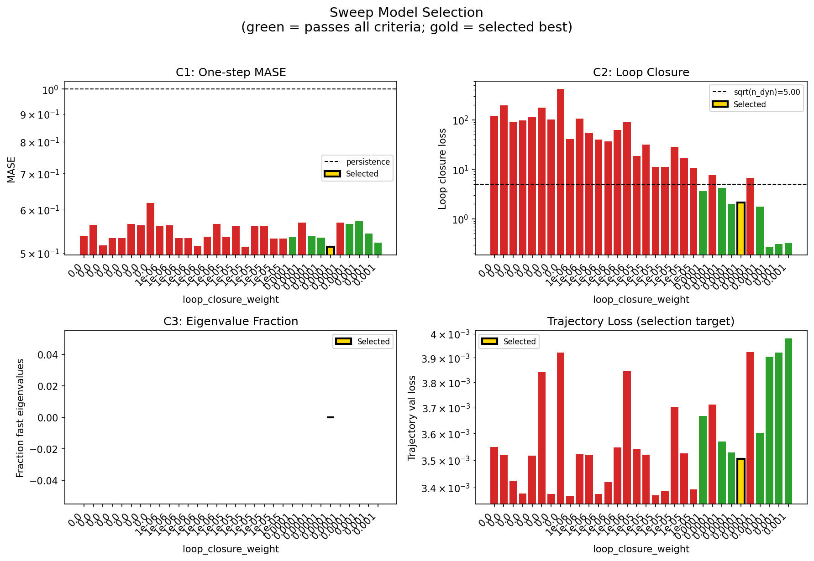
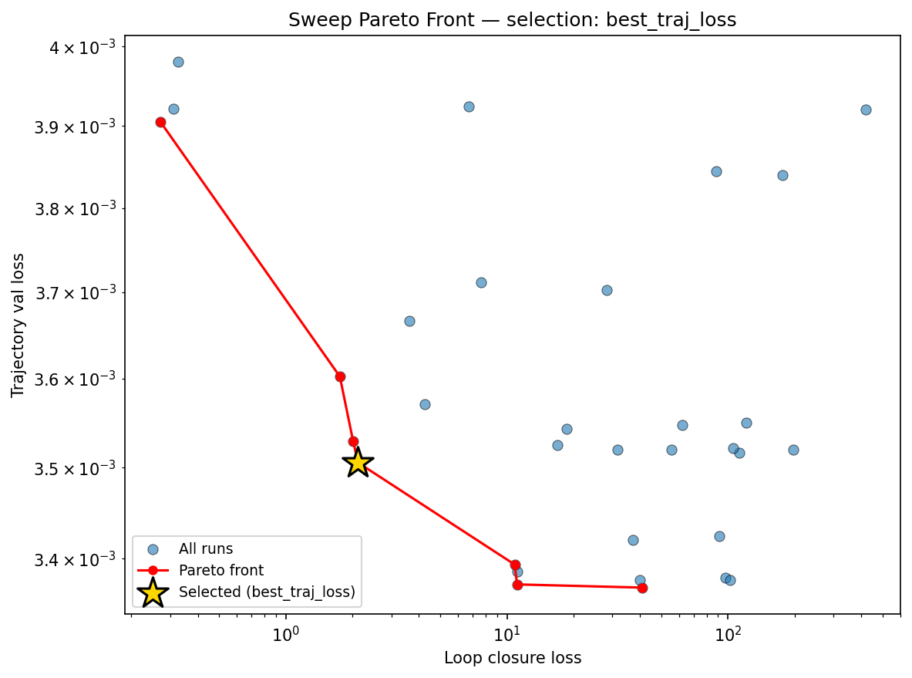
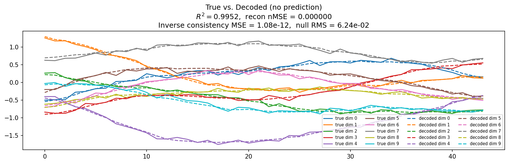
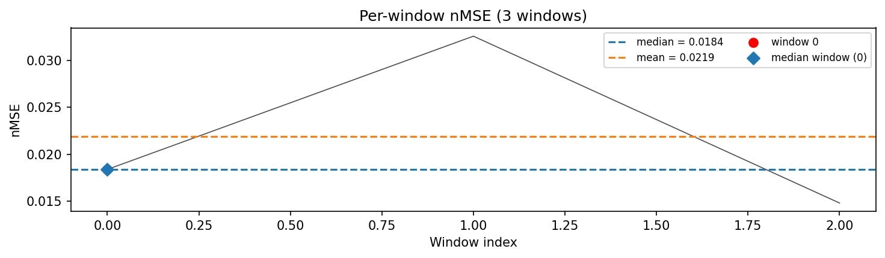
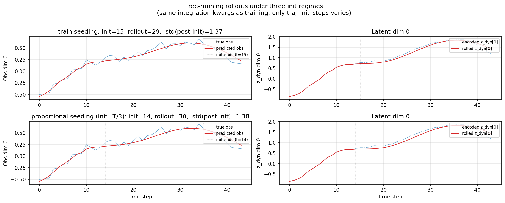
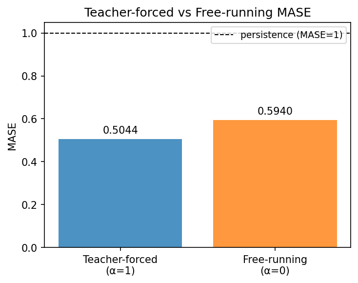
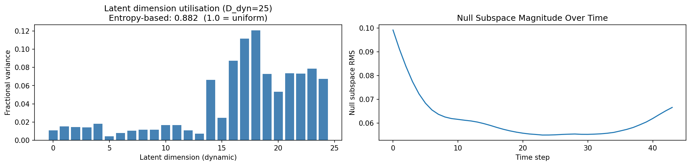
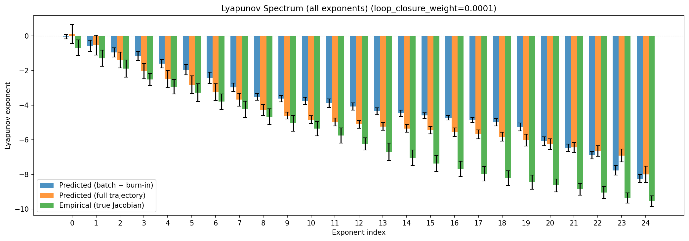
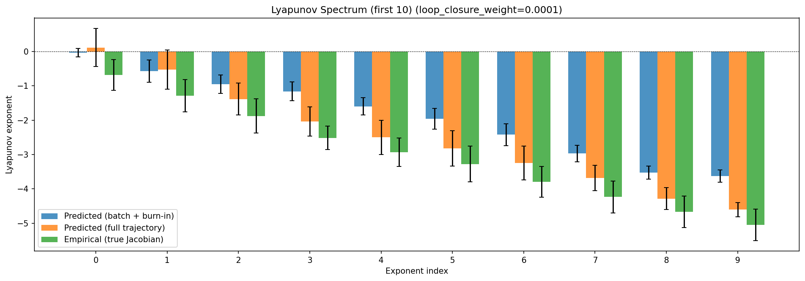
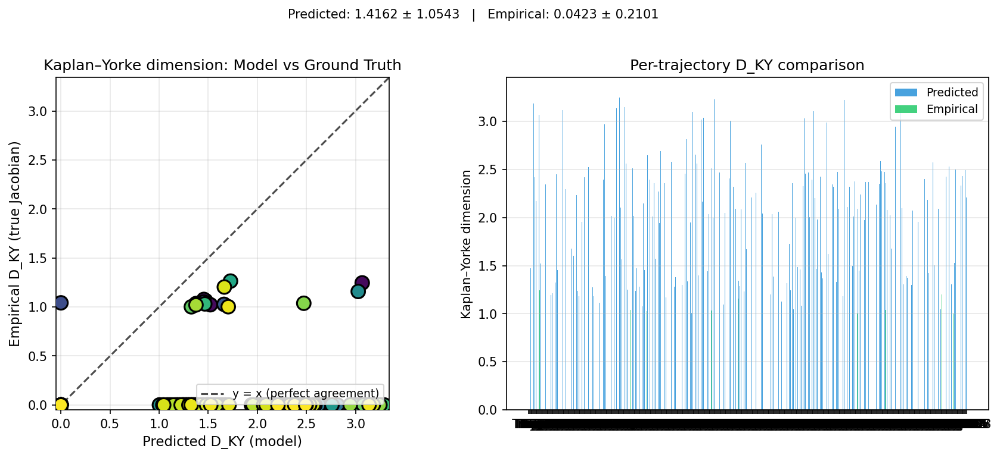
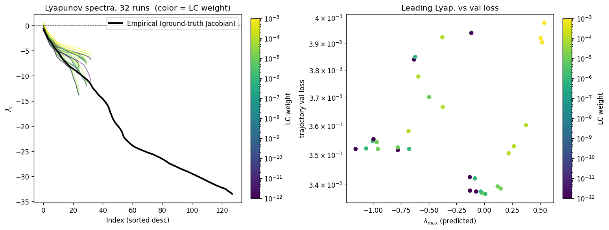
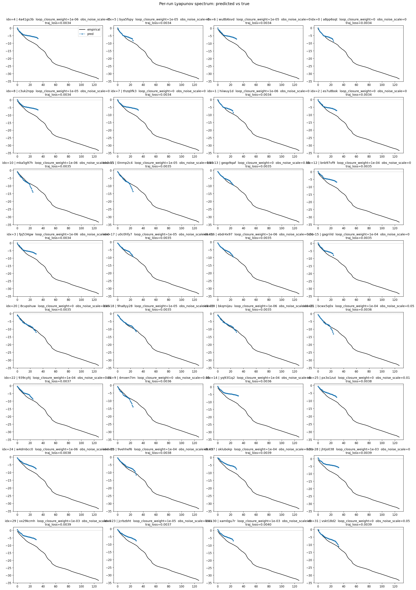
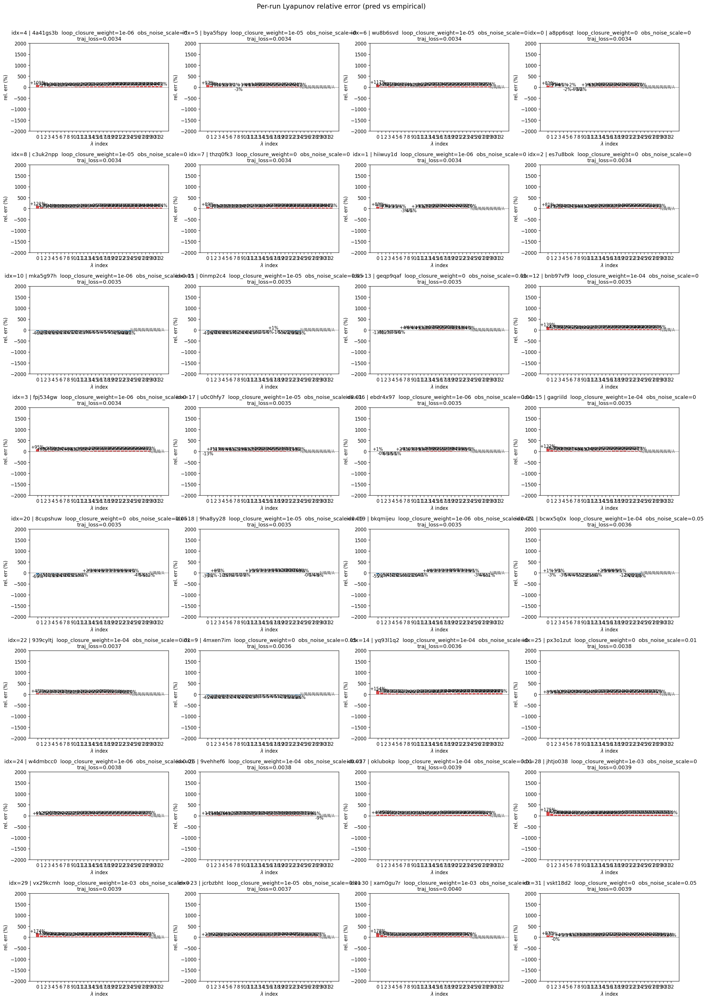
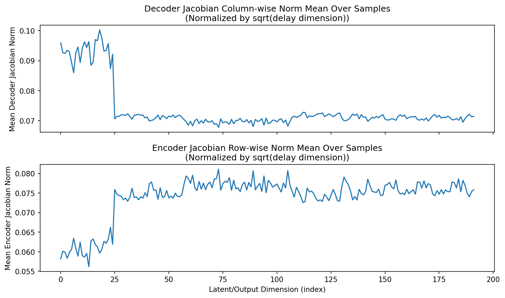
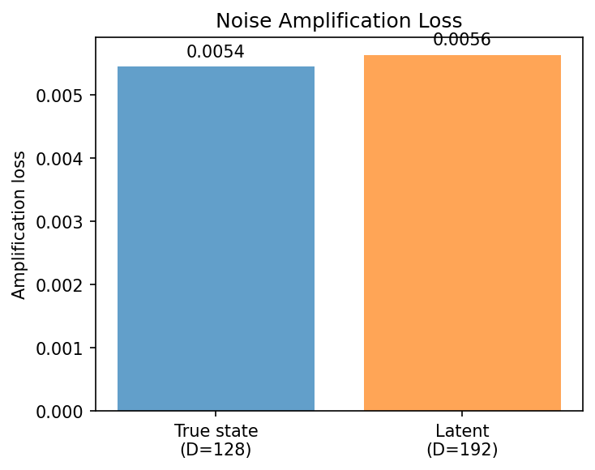
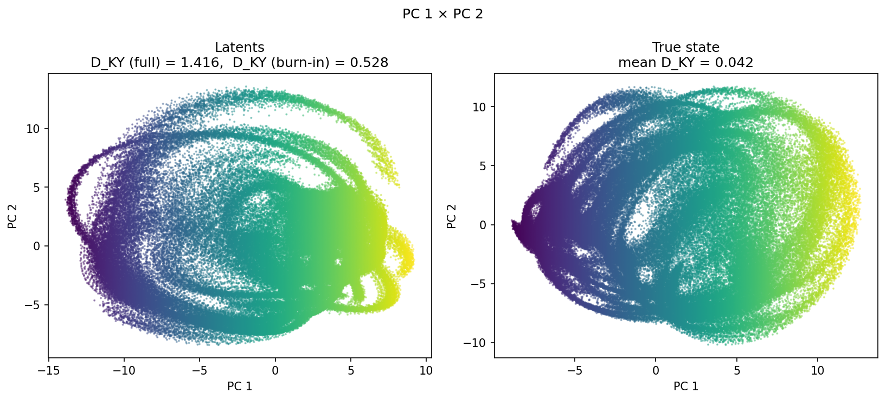
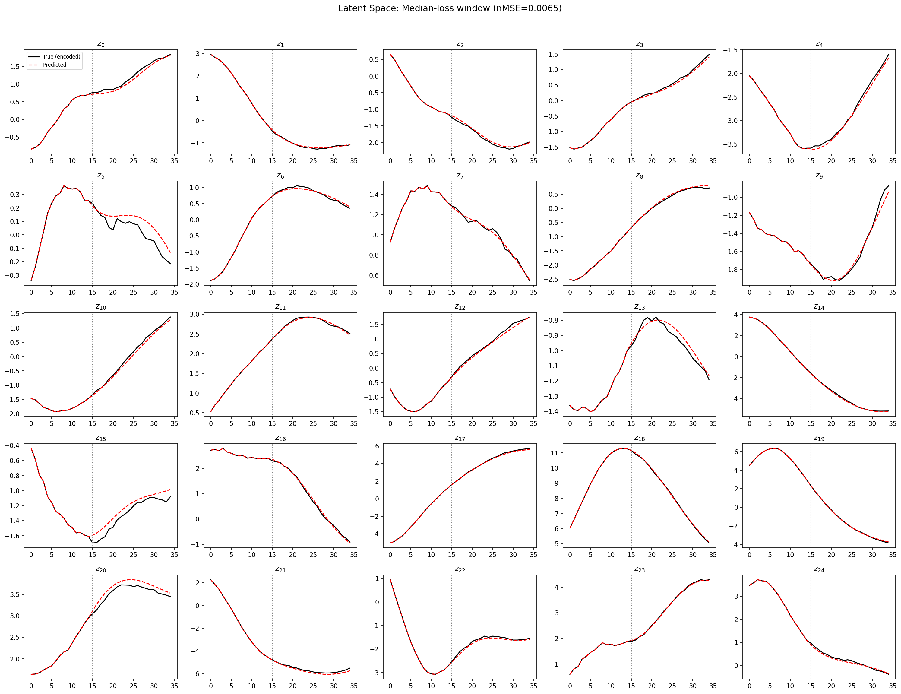
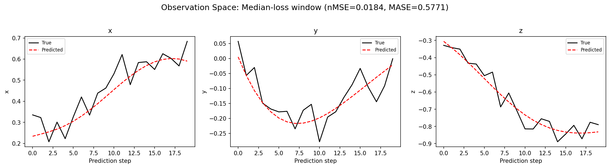
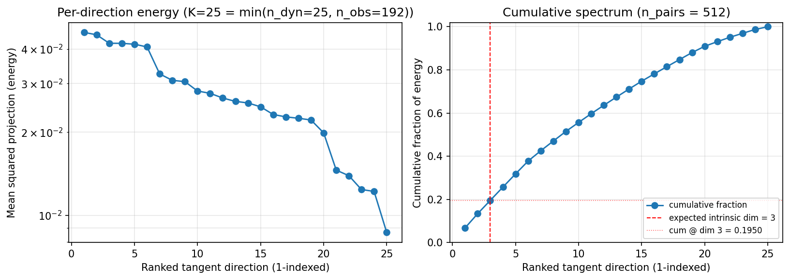
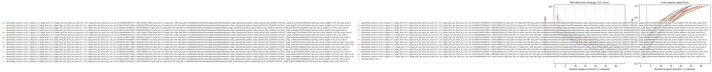
(to be written)
run_analytics stdoutrun_analyticsNo run_id provided — selecting best run from group 'wmtask_pobs16_cayley_top3nd_lcobs_20260501T163325Z__stage_b' ...
Found 32 total runs in JacobianODE/WMTask_identity_encoder_verification (group=wmtask_pobs16_cayley_top3nd_lcobs_20260501T163325Z__stage_b)
All runs (state, loop_closure_weight, tangent_entropy_weight, kl_dyn_weight):
4a41gs3b: state=finished, lc=1e-06, te=0.0, kl_dyn=0.0
bya5fspy: state=finished, lc=1e-05, te=0.0, kl_dyn=0.0
wu8b6svd: state=finished, lc=1e-05, te=0.0, kl_dyn=0.0
a8pp6sqt: state=finished, lc=0.0, te=0.0, kl_dyn=0.0
c3uk2npp: state=finished, lc=1e-05, te=0.0, kl_dyn=0.0
thzq0fk3: state=finished, lc=0.0, te=0.0, kl_dyn=0.0
hiiwuy1d: state=finished, lc=1e-06, te=0.0, kl_dyn=0.0
es7u8bok: state=finished, lc=0.0, te=0.0, kl_dyn=0.0
mka5g97h: state=finished, lc=1e-06, te=0.0, kl_dyn=0.0
0inmp2c4: state=finished, lc=1e-05, te=0.0, kl_dyn=0.0
geqp9qaf: state=finished, lc=0.0, te=0.0, kl_dyn=0.0
bnb97vf9: state=finished, lc=0.0001, te=0.0, kl_dyn=0.0
fpj534gw: state=finished, lc=1e-06, te=0.0, kl_dyn=0.0
u0c0hfy7: state=finished, lc=1e-05, te=0.0, kl_dyn=0.0
ebdr4x97: state=finished, lc=1e-06, te=0.0, kl_dyn=0.0
gagriild: state=finished, lc=0.0001, te=0.0, kl_dyn=0.0
8cupshuw: state=finished, lc=0.0, te=0.0, kl_dyn=0.0
9ha8yy28: state=finished, lc=1e-05, te=0.0, kl_dyn=0.0
bkqmijeu: state=finished, lc=1e-06, te=0.0, kl_dyn=0.0
bcwx5q0x: state=finished, lc=0.0001, te=0.0, kl_dyn=0.0
939cyltj: state=finished, lc=0.0001, te=0.0, kl_dyn=0.0
4mxen7im: state=finished, lc=0.0, te=0.0, kl_dyn=0.0
yq93l1q2: state=finished, lc=0.0001, te=0.0, kl_dyn=0.0
px3o1zut: state=finished, lc=0.0, te=0.0, kl_dyn=0.0
w4dmbcc0: state=finished, lc=1e-06, te=0.0, kl_dyn=0.0
9vehhef6: state=finished, lc=0.0001, te=0.0, kl_dyn=0.0
oklubokp: state=finished, lc=0.0001, te=0.0, kl_dyn=0.0
jhtjo038: state=finished, lc=0.001, te=0.0, kl_dyn=0.0
vx29kcmh: state=finished, lc=0.001, te=0.0, kl_dyn=0.0
jcrbzbht: state=finished, lc=1e-05, te=0.0, kl_dyn=0.0
xam0gu7r: state=finished, lc=0.001, te=0.0, kl_dyn=0.0
vskt18d2: state=finished, lc=0.0, te=0.0, kl_dyn=0.0
slurm_timeout_min not found in any run config — falling back to 180 min
Including 4a41gs3b (lc=1e-06): use_all_runs=True (state=finished)
Including bya5fspy (lc=1e-05): use_all_runs=True (state=finished)
Including wu8b6svd (lc=1e-05): use_all_runs=True (state=finished)
Including a8pp6sqt (lc=0.0): use_all_runs=True (state=finished)
Including c3uk2npp (lc=1e-05): use_all_runs=True (state=finished)
Including thzq0fk3 (lc=0.0): use_all_runs=True (state=finished)
Including hiiwuy1d (lc=1e-06): use_all_runs=True (state=finished)
Including es7u8bok (lc=0.0): use_all_runs=True (state=finished)
Including mka5g97h (lc=1e-06): use_all_runs=True (state=finished)
Including 0inmp2c4 (lc=1e-05): use_all_runs=True (state=finished)
Including geqp9qaf (lc=0.0): use_all_runs=True (state=finished)
Including bnb97vf9 (lc=0.0001): use_all_runs=True (state=finished)
Including fpj534gw (lc=1e-06): use_all_runs=True (state=finished)
Including u0c0hfy7 (lc=1e-05): use_all_runs=True (state=finished)
Including ebdr4x97 (lc=1e-06): use_all_runs=True (state=finished)
Including gagriild (lc=0.0001): use_all_runs=True (state=finished)
Including 8cupshuw (lc=0.0): use_all_runs=True (state=finished)
Including 9ha8yy28 (lc=1e-05): use_all_runs=True (state=finished)
Including bkqmijeu (lc=1e-06): use_all_runs=True (state=finished)
Including bcwx5q0x (lc=0.0001): use_all_runs=True (state=finished)
Including 939cyltj (lc=0.0001): use_all_runs=True (state=finished)
Including 4mxen7im (lc=0.0): use_all_runs=True (state=finished)
Including yq93l1q2 (lc=0.0001): use_all_runs=True (state=finished)
Including px3o1zut (lc=0.0): use_all_runs=True (state=finished)
Including w4dmbcc0 (lc=1e-06): use_all_runs=True (state=finished)
Including 9vehhef6 (lc=0.0001): use_all_runs=True (state=finished)
Including oklubokp (lc=0.0001): use_all_runs=True (state=finished)
Including jhtjo038 (lc=0.001): use_all_runs=True (state=finished)
Including vx29kcmh (lc=0.001): use_all_runs=True (state=finished)
Including jcrbzbht (lc=1e-05): use_all_runs=True (state=finished)
Including xam0gu7r (lc=0.001): use_all_runs=True (state=finished)
Including vskt18d2 (lc=0.0): use_all_runs=True (state=finished)
Found 32 effectively-done sweep runs:
loop_closure_weight=0.0, tangent_entropy_weight=0.0, kl_dyn_weight=0.0 -> run_id=4mxen7im
loop_closure_weight=0.0, tangent_entropy_weight=0.0, kl_dyn_weight=0.0 -> run_id=8cupshuw
loop_closure_weight=0.0, tangent_entropy_weight=0.0, kl_dyn_weight=0.0 -> run_id=a8pp6sqt
loop_closure_weight=0.0, tangent_entropy_weight=0.0, kl_dyn_weight=0.0 -> run_id=es7u8bok
loop_closure_weight=0.0, tangent_entropy_weight=0.0, kl_dyn_weight=0.0 -> run_id=geqp9qaf
loop_closure_weight=0.0, tangent_entropy_weight=0.0, kl_dyn_weight=0.0 -> run_id=px3o1zut
loop_closure_weight=0.0, tangent_entropy_weight=0.0, kl_dyn_weight=0.0 -> run_id=thzq0fk3
loop_closure_weight=0.0, tangent_entropy_weight=0.0, kl_dyn_weight=0.0 -> run_id=vskt18d2
loop_closure_weight=1e-06, tangent_entropy_weight=0.0, kl_dyn_weight=0.0 -> run_id=4a41gs3b
loop_closure_weight=1e-06, tangent_entropy_weight=0.0, kl_dyn_weight=0.0 -> run_id=bkqmijeu
loop_closure_weight=1e-06, tangent_entropy_weight=0.0, kl_dyn_weight=0.0 -> run_id=ebdr4x97
loop_closure_weight=1e-06, tangent_entropy_weight=0.0, kl_dyn_weight=0.0 -> run_id=fpj534gw
loop_closure_weight=1e-06, tangent_entropy_weight=0.0, kl_dyn_weight=0.0 -> run_id=hiiwuy1d
loop_closure_weight=1e-06, tangent_entropy_weight=0.0, kl_dyn_weight=0.0 -> run_id=mka5g97h
loop_closure_weight=1e-06, tangent_entropy_weight=0.0, kl_dyn_weight=0.0 -> run_id=w4dmbcc0
loop_closure_weight=1e-05, tangent_entropy_weight=0.0, kl_dyn_weight=0.0 -> run_id=0inmp2c4
loop_closure_weight=1e-05, tangent_entropy_weight=0.0, kl_dyn_weight=0.0 -> run_id=9ha8yy28
loop_closure_weight=1e-05, tangent_entropy_weight=0.0, kl_dyn_weight=0.0 -> run_id=bya5fspy
loop_closure_weight=1e-05, tangent_entropy_weight=0.0, kl_dyn_weight=0.0 -> run_id=c3uk2npp
loop_closure_weight=1e-05, tangent_entropy_weight=0.0, kl_dyn_weight=0.0 -> run_id=jcrbzbht
loop_closure_weight=1e-05, tangent_entropy_weight=0.0, kl_dyn_weight=0.0 -> run_id=u0c0hfy7
loop_closure_weight=1e-05, tangent_entropy_weight=0.0, kl_dyn_weight=0.0 -> run_id=wu8b6svd
loop_closure_weight=0.0001, tangent_entropy_weight=0.0, kl_dyn_weight=0.0 -> run_id=939cyltj
loop_closure_weight=0.0001, tangent_entropy_weight=0.0, kl_dyn_weight=0.0 -> run_id=9vehhef6
loop_closure_weight=0.0001, tangent_entropy_weight=0.0, kl_dyn_weight=0.0 -> run_id=bcwx5q0x
loop_closure_weight=0.0001, tangent_entropy_weight=0.0, kl_dyn_weight=0.0 -> run_id=bnb97vf9
loop_closure_weight=0.0001, tangent_entropy_weight=0.0, kl_dyn_weight=0.0 -> run_id=gagriild
loop_closure_weight=0.0001, tangent_entropy_weight=0.0, kl_dyn_weight=0.0 -> run_id=oklubokp
loop_closure_weight=0.0001, tangent_entropy_weight=0.0, kl_dyn_weight=0.0 -> run_id=yq93l1q2
loop_closure_weight=0.001, tangent_entropy_weight=0.0, kl_dyn_weight=0.0 -> run_id=jhtjo038
loop_closure_weight=0.001, tangent_entropy_weight=0.0, kl_dyn_weight=0.0 -> run_id=vx29kcmh
loop_closure_weight=0.001, tangent_entropy_weight=0.0, kl_dyn_weight=0.0 -> run_id=xam0gu7r
loaded wmtask RNN model checkpoint 41
Loading cached wmtask hiddens from /orcd/data/ekmiller/001/eisenaj/ControlJacobians/WMTaskModels/WMSelectionTask__cue_time_0.1__response_time_0.25__enforce_fixation_False/BiologicalRNN__cue_time_0.1__learning_rate_0.0005__max_epochs_42__N1_64__N2_64__tau_0.05__dt_0.02__eig_lower_bound_0.1__init_mode_random/_jacobianode_cache/hiddens__all__epoch41__trials4096__seed42.pt
n_dims=192, n_latent=192, n_dyn=25, dt=0.0200
run=4mxen7im: DiagnosticMetrics(one_step_mase=0.5376163721084595, loop_closure_loss=120.42092895507812, fast_eigenvalue_fraction=0.0, trajectory_val_loss=0.0035497567150741816) (from W&B history)
run=8cupshuw: DiagnosticMetrics(one_step_mase=0.5629146099090576, loop_closure_loss=197.6678466796875, fast_eigenvalue_fraction=0.0, trajectory_val_loss=0.003519719932228327) (from W&B history)
run=a8pp6sqt: DiagnosticMetrics(one_step_mase=0.5160377025604248, loop_closure_loss=91.54121398925781, fast_eigenvalue_fraction=0.0, trajectory_val_loss=0.003424505004659295) (from W&B history)
run=es7u8bok: DiagnosticMetrics(one_step_mase=0.5327379703521729, loop_closure_loss=97.23672485351562, fast_eigenvalue_fraction=0.0, trajectory_val_loss=0.003379681147634983) (from W&B history)
run=geqp9qaf: DiagnosticMetrics(one_step_mase=0.5327146053314209, loop_closure_loss=112.8042221069336, fast_eigenvalue_fraction=0.0, trajectory_val_loss=0.0035160095430910587) (from W&B history)
run=px3o1zut: DiagnosticMetrics(one_step_mase=0.5657796263694763, loop_closure_loss=176.20384216308594, fast_eigenvalue_fraction=0.0, trajectory_val_loss=0.003840089775621891) (from W&B history)
run=thzq0fk3: DiagnosticMetrics(one_step_mase=0.5615644454956055, loop_closure_loss=101.78414154052734, fast_eigenvalue_fraction=0.0, trajectory_val_loss=0.0033769046422094107) (from W&B history)
run=vskt18d2: DiagnosticMetrics(one_step_mase=0.6179745197296143, loop_closure_loss=417.56097412109375, fast_eigenvalue_fraction=0.0, trajectory_val_loss=0.003920660819858313) (from W&B history)
run=4a41gs3b: DiagnosticMetrics(one_step_mase=0.5608217120170593, loop_closure_loss=40.93993377685547, fast_eigenvalue_fraction=0.0, trajectory_val_loss=0.0033689914271235466) (from W&B history)
run=bkqmijeu: DiagnosticMetrics(one_step_mase=0.5618592500686646, loop_closure_loss=105.38843536376953, fast_eigenvalue_fraction=0.0, trajectory_val_loss=0.0035213942173868418) (from W&B history)
run=ebdr4x97: DiagnosticMetrics(one_step_mase=0.5321716070175171, loop_closure_loss=55.3389892578125, fast_eigenvalue_fraction=0.0, trajectory_val_loss=0.003519639605656266) (from W&B history)
run=fpj534gw: DiagnosticMetrics(one_step_mase=0.5320156216621399, loop_closure_loss=39.86077880859375, fast_eigenvalue_fraction=0.0, trajectory_val_loss=0.003376834327355027) (from W&B history)
run=hiiwuy1d: DiagnosticMetrics(one_step_mase=0.5156449675559998, loop_closure_loss=37.05280685424805, fast_eigenvalue_fraction=0.0, trajectory_val_loss=0.003420293563976884) (from W&B history)
run=mka5g97h: DiagnosticMetrics(one_step_mase=0.535812258720398, loop_closure_loss=62.04085922241211, fast_eigenvalue_fraction=0.0, trajectory_val_loss=0.0035473888274282217) (from W&B history)
run=w4dmbcc0: DiagnosticMetrics(one_step_mase=0.5648389458656311, loop_closure_loss=88.52106475830078, fast_eigenvalue_fraction=0.0, trajectory_val_loss=0.0038446676917374134) (from W&B history)
run=0inmp2c4: DiagnosticMetrics(one_step_mase=0.5350269079208374, loop_closure_loss=18.635419845581055, fast_eigenvalue_fraction=0.0, trajectory_val_loss=0.0035431236028671265) (from W&B history)
run=9ha8yy28: DiagnosticMetrics(one_step_mase=0.5599707365036011, loop_closure_loss=31.662199020385742, fast_eigenvalue_fraction=0.0, trajectory_val_loss=0.0035197639372199774) (from W&B history)
run=bya5fspy: DiagnosticMetrics(one_step_mase=0.5129249095916748, loop_closure_loss=11.107897758483887, fast_eigenvalue_fraction=0.0, trajectory_val_loss=0.003372401697561145) (from W&B history)
run=c3uk2npp: DiagnosticMetrics(one_step_mase=0.5600445866584778, loop_closure_loss=11.130702018737793, fast_eigenvalue_fraction=0.0, trajectory_val_loss=0.003386485856026411) (from W&B history)
run=jcrbzbht: DiagnosticMetrics(one_step_mase=0.5609524250030518, loop_closure_loss=28.307636260986328, fast_eigenvalue_fraction=0.0, trajectory_val_loss=0.0037021550815552473) (from W&B history)
run=u0c0hfy7: DiagnosticMetrics(one_step_mase=0.5317320823669434, loop_closure_loss=16.83565330505371, fast_eigenvalue_fraction=0.0, trajectory_val_loss=0.0035251060035079718) (from W&B history)
run=wu8b6svd: DiagnosticMetrics(one_step_mase=0.531672477722168, loop_closure_loss=10.826793670654297, fast_eigenvalue_fraction=0.0, trajectory_val_loss=0.0033937497064471245) (from W&B history)
run=939cyltj: DiagnosticMetrics(one_step_mase=0.5346970558166504, loop_closure_loss=3.605109453201294, fast_eigenvalue_fraction=0.0, trajectory_val_loss=0.003666474251076579) (from W&B history)
run=9vehhef6: DiagnosticMetrics(one_step_mase=0.5681678652763367, loop_closure_loss=7.610333442687988, fast_eigenvalue_fraction=0.0, trajectory_val_loss=0.0037117006722837687) (from W&B history)
run=bcwx5q0x: DiagnosticMetrics(one_step_mase=0.5366339683532715, loop_closure_loss=4.2423505783081055, fast_eigenvalue_fraction=0.0, trajectory_val_loss=0.0035704022739082575) (from W&B history)
run=bnb97vf9: DiagnosticMetrics(one_step_mase=0.5336598753929138, loop_closure_loss=2.0139076709747314, fast_eigenvalue_fraction=0.0, trajectory_val_loss=0.003529232693836093) (from W&B history)
run=gagriild: DiagnosticMetrics(one_step_mase=0.5135023593902588, loop_closure_loss=2.120859146118164, fast_eigenvalue_fraction=0.0, trajectory_val_loss=0.003505139844492078) (from W&B history)
run=oklubokp: DiagnosticMetrics(one_step_mase=0.5687460899353027, loop_closure_loss=6.735525608062744, fast_eigenvalue_fraction=0.0, trajectory_val_loss=0.003924041520804167) (from W&B history)
run=yq93l1q2: DiagnosticMetrics(one_step_mase=0.565270185470581, loop_closure_loss=1.7546478509902954, fast_eigenvalue_fraction=0.0, trajectory_val_loss=0.003602190874516964) (from W&B history)
run=jhtjo038: DiagnosticMetrics(one_step_mase=0.5720411539077759, loop_closure_loss=0.2710019648075104, fast_eigenvalue_fraction=0.0, trajectory_val_loss=0.0039050981868058443) (from W&B history)
run=vx29kcmh: DiagnosticMetrics(one_step_mase=0.5425883531570435, loop_closure_loss=0.3111302852630615, fast_eigenvalue_fraction=0.0, trajectory_val_loss=0.003921205177903175) (from W&B history)
run=xam0gu7r: DiagnosticMetrics(one_step_mase=0.5219135880470276, loop_closure_loss=0.32467490434646606, fast_eigenvalue_fraction=0.0, trajectory_val_loss=0.003980071283876896) (from W&B history)
Ranking method: best_traj_loss
Best run ID: gagriild
Best loop_closure_weight: 0.0001
Best tangent_entropy_weight: 0.0
Best kl_dyn_weight: 0.0
Best traj loss: 0.003505
Criteria applied: ['C1', 'C2', 'C3']
Surviving: 8 / 32
Auto-selected run_id: gagriild
======================================================================
PARETO FRONTIER RUNS (7 runs)
======================================================================
Run ID LC Loss Traj Val Loss
------------ -------------- --------------
jhtjo038 0.271002 0.003905
yq93l1q2 1.754648 0.003602
bnb97vf9 2.013908 0.003529
gagriild 2.120859 0.003505 <-- selected
wu8b6svd 10.826794 0.003394
bya5fspy 11.107898 0.003372
4a41gs3b 40.939934 0.003369
======================================================================
RANKING METHOD COMPARISON (over 8 survivors)
======================================================================
Method Run ID LC Loss Traj Val Loss
---------------------- ------------ -------------- --------------
best_traj_loss gagriild 2.120859 0.003505 <-- active
pareto_knee yq93l1q2 1.754648 0.003602
geo_rank gagriild 2.120859 0.003505
minimax_rank yq93l1q2 1.754648 0.003602
geo_log_score gagriild 2.120859 0.003505
minimax_log_score yq93l1q2 1.754648 0.003602
======================================================================
Loading run gagriild from JacobianODE/WMTask_identity_encoder_verification ...
loaded wmtask RNN model checkpoint 41
Loading cached wmtask hiddens from /orcd/data/ekmiller/001/eisenaj/ControlJacobians/WMTaskModels/WMSelectionTask__cue_time_0.1__response_time_0.25__enforce_fixation_False/BiologicalRNN__cue_time_0.1__learning_rate_0.0005__max_epochs_42__N1_64__N2_64__tau_0.05__dt_0.02__eig_lower_bound_0.1__init_mode_random/_jacobianode_cache/hiddens__all__epoch41__trials4096__seed42.pt
Loading checkpoint epoch=43-step=5500.ckpt...
Train dataset shape: torch.Size([25803, 35, 192])
Validation dataset shape: torch.Size([7380, 35, 192])
Test dataset shape: torch.Size([3681, 35, 192])
Train trajectories dataset shape: torch.Size([2867, 44, 192])
Validation trajectories dataset shape: torch.Size([820, 44, 192])
Test trajectories dataset shape: torch.Size([409, 44, 192])
Loading checkpoint epoch=43-step=5500.ckpt...
Computing reconstruction ...
Computing MASE ...
Teacher-forced MASE: 0.5044
Free-running MASE: 0.5940
Computing latent utilization ...
Entropy-based utilization: 0.882
Null subspace mean RMS: 6.242261e-02
Computing Lyapunov exponents ...
Computing full-trajectory Lyapunov (409 test trajs, T=44) ...
Predicted Lyapunov exponents (batch+burn-in, 128 windowed trajs):
λ_1 = -0.0391 ± 0.1249
λ_2 = -0.5751 ± 0.3254
λ_3 = -0.9587 ± 0.2681
λ_4 = -1.1630 ± 0.2730
λ_5 = -1.5976 ± 0.2552
λ_6 = -1.9557 ± 0.3011
λ_7 = -2.4193 ± 0.3187
λ_8 = -2.9699 ± 0.2398
λ_9 = -3.5230 ± 0.1927
λ_10 = -3.6274 ± 0.1818
λ_11 = -3.7472 ± 0.2093
λ_12 = -3.8798 ± 0.2456
λ_13 = -4.0736 ± 0.2071
λ_14 = -4.3503 ± 0.1952
λ_15 = -4.4639 ± 0.1855
λ_16 = -4.5958 ± 0.1590
λ_17 = -4.7203 ± 0.1319
λ_18 = -4.8522 ± 0.1527
λ_19 = -4.9905 ± 0.2162
λ_20 = -5.2600 ± 0.2314
λ_21 = -6.0815 ± 0.2545
λ_22 = -6.4515 ± 0.2096
λ_23 = -6.8846 ± 0.2200
λ_24 = -7.7661 ± 0.2828
λ_25 = -8.2495 ± 0.2381
Predicted Lyapunov exponents (full-length, 409 test trajs):
λ_1 = +0.1131 ± 0.5537
λ_2 = -0.5263 ± 0.5695
λ_3 = -1.3854 ± 0.4610
λ_4 = -2.0374 ± 0.4293
λ_5 = -2.5012 ± 0.4966
λ_6 = -2.8212 ± 0.5150
λ_7 = -3.2482 ± 0.4898
λ_8 = -3.6829 ± 0.3686
λ_9 = -4.2828 ± 0.3173
λ_10 = -4.6030 ± 0.2034
λ_11 = -4.8354 ± 0.2234
λ_12 = -4.9739 ± 0.2356
λ_13 = -5.1049 ± 0.2277
λ_14 = -5.2299 ± 0.2244
λ_15 = -5.3492 ± 0.2167
λ_16 = -5.4469 ± 0.2114
λ_17 = -5.5664 ± 0.2507
λ_18 = -5.6834 ± 0.2569
λ_19 = -5.8229 ± 0.2566
λ_20 = -6.0261 ± 0.3434
λ_21 = -6.2518 ± 0.3115
λ_22 = -6.4430 ± 0.2896
λ_23 = -6.6444 ± 0.3012
λ_24 = -6.9123 ± 0.3711
λ_25 = -8.0017 ± 0.4796
Empirical Lyapunov exponents (mean ± std):
λ_1 = -0.6836 ± 0.4470
λ_2 = -1.2860 ± 0.4717
λ_3 = -1.8796 ± 0.4983
λ_4 = -2.5140 ± 0.3383
λ_5 = -2.9329 ± 0.4143
λ_6 = -3.2778 ± 0.5212
λ_7 = -3.7948 ± 0.4446
λ_8 = -4.2351 ± 0.4668
λ_9 = -4.6672 ± 0.4583
λ_10 = -5.0458 ± 0.4531
λ_11 = -5.3534 ± 0.4185
λ_12 = -5.7506 ± 0.4346
λ_13 = -6.2355 ± 0.3491
λ_14 = -6.7043 ± 0.5036
λ_15 = -7.0414 ± 0.4554
λ_16 = -7.3719 ± 0.4648
λ_17 = -7.6725 ± 0.4415
λ_18 = -7.9667 ± 0.4130
λ_19 = -8.2155 ± 0.4290
λ_20 = -8.4474 ± 0.4083
λ_21 = -8.6400 ± 0.3667
λ_22 = -8.8546 ± 0.3395
λ_23 = -9.0471 ± 0.3366
λ_24 = -9.3642 ± 0.2863
λ_25 = -9.5403 ± 0.3009
λ_26 = -9.7473 ± 0.3189
λ_27 = -9.9780 ± 0.3514
λ_28 = -10.2177 ± 0.4331
λ_29 = -10.4760 ± 0.4197
λ_30 = -10.6968 ± 0.4504
λ_31 = -11.0538 ± 0.5425
λ_32 = -11.3182 ± 0.5459
λ_33 = -11.7806 ± 0.6071
λ_34 = -12.3300 ± 0.5244
λ_35 = -12.6464 ± 0.5369
λ_36 = -13.0198 ± 0.6314
λ_37 = -13.3795 ± 0.7073
λ_38 = -13.7502 ± 0.7660
λ_39 = -14.0682 ± 0.7579
λ_40 = -14.3279 ± 0.7619
λ_41 = -14.6206 ± 0.8778
λ_42 = -15.0213 ± 0.8116
λ_43 = -15.3487 ± 0.8488
λ_44 = -15.7679 ± 0.8512
λ_45 = -16.3535 ± 0.8105
λ_46 = -17.2371 ± 0.8420
λ_47 = -18.0172 ± 0.6551
λ_48 = -18.7348 ± 0.4352
λ_49 = -19.1920 ± 0.4388
λ_50 = -19.6032 ± 0.3862
λ_51 = -19.9849 ± 0.4171
λ_52 = -20.2854 ± 0.3677
λ_53 = -20.7129 ± 0.4088
λ_54 = -21.2293 ± 0.4493
λ_55 = -22.1518 ± 0.3711
λ_56 = -22.5100 ± 0.3571
λ_57 = -22.8264 ± 0.3133
λ_58 = -23.1069 ± 0.3495
λ_59 = -23.3589 ± 0.3337
λ_60 = -23.6276 ± 0.2926
λ_61 = -23.8603 ± 0.3155
λ_62 = -24.0618 ± 0.3005
λ_63 = -24.2152 ± 0.3129
λ_64 = -24.3396 ± 0.3136
λ_65 = -24.4895 ± 0.3210
λ_66 = -24.6115 ± 0.3197
λ_67 = -24.7359 ± 0.3269
λ_68 = -24.8561 ± 0.3392
λ_69 = -24.9753 ± 0.3426
λ_70 = -25.1117 ± 0.3497
λ_71 = -25.2226 ± 0.3734
λ_72 = -25.3357 ± 0.4009
λ_73 = -25.4353 ± 0.4172
λ_74 = -25.5439 ± 0.4046
λ_75 = -25.6332 ± 0.4116
λ_76 = -25.7832 ± 0.4585
λ_77 = -25.9142 ± 0.4799
λ_78 = -26.0449 ± 0.4990
λ_79 = -26.1810 ± 0.5037
λ_80 = -26.3617 ± 0.4899
λ_81 = -26.5171 ± 0.4864
λ_82 = -26.6628 ± 0.4753
λ_83 = -26.8617 ± 0.4795
λ_84 = -27.0282 ± 0.5036
λ_85 = -27.2607 ± 0.4846
λ_86 = -27.4529 ± 0.4854
λ_87 = -27.5733 ± 0.4725
λ_88 = -27.7187 ± 0.4967
λ_89 = -27.8617 ± 0.5003
λ_90 = -27.9895 ± 0.4903
λ_91 = -28.1274 ± 0.4923
λ_92 = -28.2824 ± 0.4913
λ_93 = -28.4072 ± 0.4914
λ_94 = -28.5255 ± 0.4695
λ_95 = -28.6477 ± 0.4521
λ_96 = -28.7842 ± 0.4453
λ_97 = -28.9001 ± 0.4403
λ_98 = -29.0308 ± 0.4330
λ_99 = -29.1511 ± 0.4295
λ_100 = -29.2954 ± 0.4247
λ_101 = -29.4503 ± 0.4217
λ_102 = -29.5753 ± 0.4321
λ_103 = -29.6956 ± 0.4539
λ_104 = -29.8547 ± 0.4485
λ_105 = -29.9992 ± 0.4490
λ_106 = -30.1172 ± 0.4378
λ_107 = -30.2615 ± 0.4426
λ_108 = -30.4062 ± 0.3980
λ_109 = -30.5554 ± 0.4003
λ_110 = -30.7032 ± 0.3985
λ_111 = -30.8743 ± 0.4228
λ_112 = -31.0109 ± 0.4336
λ_113 = -31.1492 ± 0.4292
λ_114 = -31.3023 ± 0.3981
λ_115 = -31.4396 ± 0.4097
λ_116 = -31.5685 ± 0.3902
λ_117 = -31.7302 ± 0.3526
λ_118 = -31.8705 ± 0.3050
λ_119 = -31.9948 ± 0.3040
λ_120 = -32.0998 ± 0.2813
λ_121 = -32.2401 ± 0.2718
λ_122 = -32.3221 ± 0.2617
λ_123 = -32.4282 ± 0.2531
λ_124 = -32.5858 ± 0.2272
λ_125 = -32.8296 ± 0.2629
λ_126 = -33.0206 ± 0.2244
λ_127 = -33.2132 ± 0.2160
λ_128 = -33.4614 ± 0.3541
Mean KY dim (predicted): 1.416 ± 1.054
Mean KY dim (empirical): 0.042 ± 0.210
Mean KY dim (burn-in): 0.528 ± 0.719
Computing prediction windows ...
Windows: 3 — nMSE min=0.0148, median=0.0184, mean=0.0219, max=0.0326
Computing long-trajectory free-running rollouts ...
Computing encoder/decoder Jacobians ...
encoder_jacobian: (128, 192, 192)
decoder_jacobian: (128, 192, 192)
Computing amplification loss ...
Amplification loss — True state: 0.005443
Amplification loss — Latent: 0.005630
Computing tangent space spectrum ...